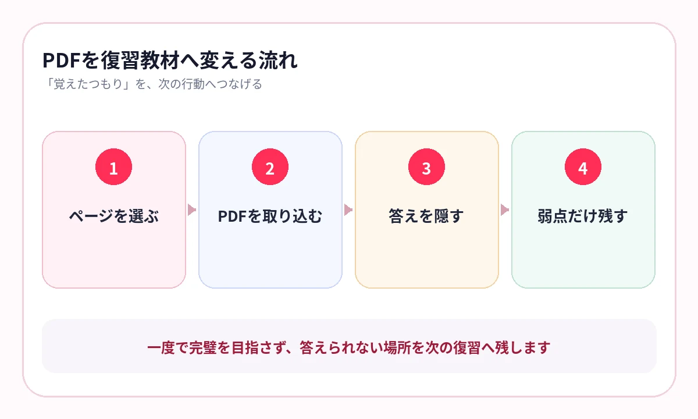

PDFはたくさん保存しているのに、見直したいときに開かない。そんな資料が増えていませんか？
学校、塾、予備校、資格講座から配られる教材は、PDFが増えています。持ち運びは便利でも、ファイルを開いてスクロールするだけでは、知識は定着しません。
PDFを学習に使うには、「読む資料」と「答えるページ」を分けることが大切です。
ダウンロードしただけでは、学習は始まっていない
PDFは「持っている安心感」が生まれやすい教材です。保存した時点で進んだ気になりますが、試験で必要なのは、画面を見ずに答えられることです。
- ファイル名だけでは内容を思い出せない
- ページ数が多く、開くまでが重い
- 大事な箇所へ毎回スクロールする
- 読んだページと、答えられるページを区別していない
PDFの量ではなく、何ページを答えられるようにしたかで進捗を見てください。
最初に「残すページ」を決める
100ページのPDFを、100ページすべて暗記する必要はありません。まず目次を見て、暗記に使うページを選びます。
定義・用語のページ
用語、数字、制度、公式など、問いと答えを作りやすいページ。
図解・比較表のページ
流れ、分類、違いをレイアウトごと覚えたいページ。
間違いの根拠ページ
問題演習で誤答した理由が説明されているページ。
「後で読むかもしれない」ではなく、「次に答えるページか」で選ぶと、保存量を抑えられます。

PDF名より、目的が分かる教材名にする
配布されたPDFには、講座名や管理番号だけが付いていることがあります。そのままでは、後から探せません。
- 宅建業法｜8種制限｜数字
- 中2理科｜消化と呼吸｜期末
- 日本史｜明治維新｜要復習
- ITパスポート｜情報セキュリティ｜略語
科目、単元、目的を名前に入れると、テスト前に「何を答える教材か」が見ただけで分かります。
横にスワイプして画像を確認できます


{kind=link}
{kind=link}
1回目は順番、2回目はランダム
最初はPDFの流れに沿って理解します。次は順番を崩し、知識だけで答えられるか確認します。
理解する
元のPDFを読み、用語の意味やつながりを理解します。
隠して答える
重要語句を見ないで思い出します。
順番を崩す
複数教材を混ぜ、ページの位置に頼らず答えます。
弱点へ戻る
間違えたページだけを優先し、次の復習を短くします。
印刷せず、PDFから暗記シートを作る
AI暗記シートでは、PDFを直接開き、複数ページをまとめて暗記シートへ変換できます。元の図表やレイアウトを残したまま、重要語句を隠して出題します。
取り込んだ後は、全ページを一度出題し、「あやしい」「覚えていない」が付いた教材を次回へ残します。
- 教材名を検索しやすく直す
- マスクの位置を確認する
- 一度出題して難しさを見る
- 弱点が付いたページだけ次回へ残す
よくある質問
PDFをすべて取り込む必要はありますか？
ありません。用語、図解、比較表、誤答の根拠など、繰り返し答えたいページだけを選ぶ方が効率的です。
複数ページをまとめて取り込めますか？
AI暗記シートでは複数ページのPDFを取り込み、ページごとの教材として作成できます。
PDFを印刷する勉強と何が違いますか？
書き込みや問題演習は紙が便利です。iPhoneでは、必要なページを持ち歩き、答えを隠して短時間で反復する用途に向いています。
参考情報
試験範囲・制度は公式情報、復習方法は学習科学の研究を参照しています。
保存したPDFを、開かない資料で終わらせない
必要なページだけを、暗記テストへ
PDFを直接取り込み、重要語句を隠して出題。印刷せず、通勤・通学中にも弱点へ戻れます。
iPhone・iPad対応／3枚まで無料保存／継続利用は800円の買い切り